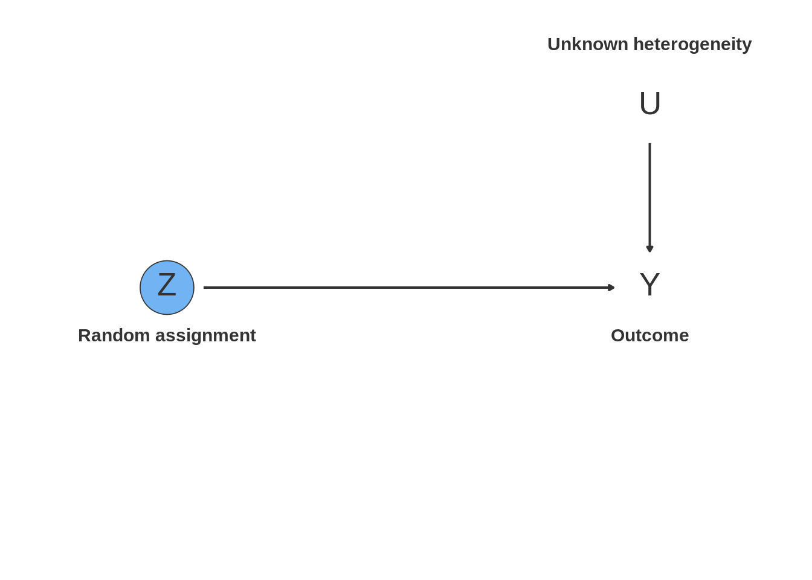
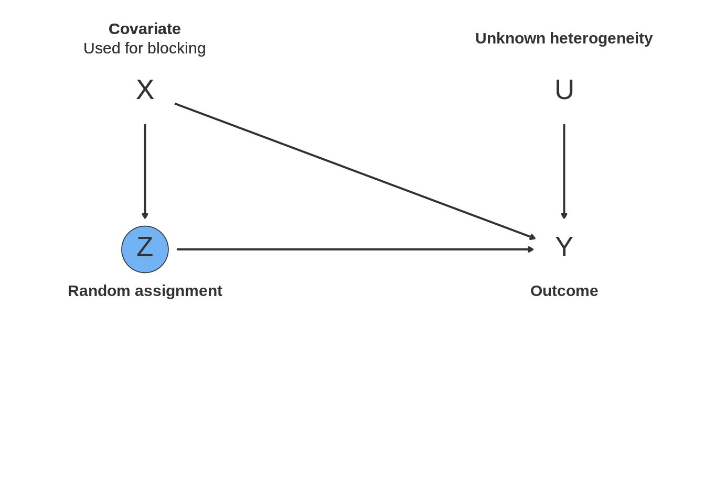

17.5 Process tracing
17.5.1 Declaration
use mutate for posterior
use declare_measurement for CPOs
use PO function for types
maybe don’t reuse pr_SIW_H for both dgp and estimator
types <- c('Z_caused_Y', 'Z_caused_not_Y', 'always_Y', 'always_not_Y')
design <-
declare_population(N = 195,
Z = draw_binary(prob = .3, N = N),
type = sample(x = types, size = N, replace = TRUE, prob = c(.2, .1, .2, .5))) +
declare_potential_outcomes(
Y ~ Z * (type == "Z_caused_Y") + (1 - Z) * (type == "Z_caused_not_Y") + (type == "always_Y"),
conditions = list(Z = c(0, 1), type = types)) +
declare_potential_outcomes(
pr_C_1 ~ Z * (.25 * (type == "Z_caused_Y") + .005 * (type == "always_Y")),
conditions = list(Z = c(0, 1), type = types)) +
declare_reveal(c(Y, pr_C_1), c(Z, type)) +
declare_measurement(C = draw_binary(prob = pr_C_1)) +
declare_sampling(handler = function(data) data %>% filter(Z==1 & Y==1) %>% sample_n(size = 1)) +
declare_estimand(did_Z_cause_Y = type == 'Z_caused_Y') +
declare_estimator(
pr_type_Z_caused_Y = .5,
pr_C_1_type_Z_caused_Y = .25,
pr_C_1_type_always_Y = .005,
pr_C_type_Z_caused_Y = C * pr_C_1_type_Z_caused_Y + (1 - C) * (1 - pr_C_1_type_Z_caused_Y),
pr_C_type_always_Y = C * pr_C_1_type_always_Y + (1 - C) * (1 - pr_C_1_type_always_Y),
posterior =
pr_type_Z_caused_Y * pr_C_type_Z_caused_Y / (pr_type_Z_caused_Y * pr_C_type_Z_caused_Y + pr_C_type_always_Y * (1 - pr_type_Z_caused_Y)),
estimator_label = "Smoking Gun",
estimand_label = "did_Z_cause_Y",
handler = summarize)
# diagnose_design(process_tracing_design,
# diagnosands = declare_diagnosands(
# bias = mean(posterior - estimand),
# rmse = sqrt(mean((posterior - estimand) ^ 2)),
# mean_estimand = mean(estimand),
# mean_posterior = mean(posterior),
# keep_defaults = FALSC
# ), sims = 1000)17.5.2 Dag

17.5.3 Example
The design itself makes use of the helper functions above in the declare_estimator steps.
Assumption: E can only be observed if X and Y present (e.g. militia forms around natural resources during a civil war–cannot happen if you don’t have both a civil war and natural resources).
17.5.4 Exercises
- Diagnosis starts with researcher correct about prior belief of hypothesis (.5) and about clue probs (smoking gun)
- Change prior and look at bias
- Change clue probs + clue prior and look at bias
- Change clue probs
17.5.5 Online Appendix Applied Example
Point here is to explore cases where you look at multiple sources of evidence
In many parts of the world, people rely on non-state institutions to construct social order. Sometimes, those institutions persist for a long time [e.g., mourides], whereas sometimes they break down. Why do non-state institutions fail? Some scholars of African societies think that traditional institutions declined in the 1960s and 1970s due to the forceful efforts of post-independence leaders who saw these alternative authorities as a threat to the young state. Other scholars such as Ensminger (1990) point instead to the internal political economy of rural societies, and emphasize the role of economic interests in the decline of traditional institutions.
Ensminger (1990) is an economic anthropologist who does a bunch of cool work with the Orma in Kenya, a nomadic pastoralist group. She points out that, whereas the Orma were able to avoid a tragedy of the commons by policing access to scarce water resources by competing somali pastoralists throughout the 1960s and 1970s, by the 1980s the power of the council of elders was weakened, as evidenced by frequent defection of individual orma who sold their water to somalis, thus hurting the interests of the group.
Her study presents a case of causal process tracing in which the scholar presents evidence from rich fieldwork to support the inference that some effect was produced by a specific cause. It is useful to formalize as it provides lessons about what kinds of clues qualitative researchers might seek in order to maximize the probative value of their answer strategy.
The key pieces are the outcome (breakdown of council of elders – measured through defections by orma selling their water to somalis), its potential cause (economic diversification – measured as a move away from cattle-based pastoralism towards sendentary economic activity – teaching, shops – by some Orma), and the pieces of evidence or “clues” that support the notion that the relationship between the outcome and the cause is causal.
We set up an imaginary study inspired by Ensminger (1990)
The researcher seeks to test the claim that economic diversification leads to the breakdown of informal institutions. They look for a group in Kenya that has experienced diversification and whose institutions of managing the commons have failed. [think of cool empirical implications]. They want to test this claim against the idea that informal institutions failed due to a deliberate attempt by state authorities to supplant traditional leaders.
Their answer strategy diverges from the one in the book insofar as they seek not one but two clues to test their prior explanation.
This time the researcher needs to think not only about the typology of their clues in terms of Van Evera stuff, but also the joint probability distribution of the clues.
We make use of the
joint_probfunction from the book R package, which calculates the joint probability distribution of two correlated events, given their marginal probabilities and correlation- Researcher imposes monotonicity (no
Z_caused_not_Ytypes) – economic diversity either has no or a negative effect on institutions Note: no variation in outcome. All informal institutions have declined, we just want to know if economic diversification caused it. A quant study would provide no leverage.
Note: joint probabilities of observing clues depend only on type, not (as before) on type and Z
types <- c('Z_caused_Y', 'Z_caused_not_Y', 'always_Y', 'always_not_Y')
design <-
declare_population(N = 20,
Z = draw_binary(prob = .5, N = N),
type = sample(x = types, size = N, replace = TRUE, prob = c(.5, 0, .5, 0))) +
declare_potential_outcomes(
Y ~ Z * (type == "Z_caused_Y") + (1 - Z) * (type == "Z_caused_not_Y") + (type == "always_Y"),
conditions = list(Z = c(0, 1), type = types)) +
declare_potential_outcomes(
pr_C1C2_00 ~ (joint_prob(.75,.3,0,"00") * (type == "Z_caused_Y") + joint_prob(.25,.005,0,"00") * (type == "always_Y")),
conditions = list(Z = c(0, 1), type = types)) +
declare_potential_outcomes(
pr_C1C2_01 ~ (joint_prob(.75,.3,0,"01") * (type == "Z_caused_Y") + joint_prob(.25,.005,0,"01") * (type == "always_Y")),
conditions = list(Z = c(0, 1), type = types)) +
declare_potential_outcomes(
pr_C1C2_10 ~ (joint_prob(.75,.3,0,"10") * (type == "Z_caused_Y") + joint_prob(.25,.005,0,"10") * (type == "always_Y")),
conditions = list(Z = c(0, 1), type = types)) +
declare_potential_outcomes(
pr_C1C2_11 ~ (joint_prob(.75,.3,0,"11") * (type == "Z_caused_Y") + joint_prob(.25,.005,0,"11") * (type == "always_Y")),
conditions = list(Z = c(0, 1), type = types)) +
declare_reveal(c(Y, pr_C1C2_00,pr_C1C2_01,pr_C1C2_10,pr_C1C2_11), c(Z, type)) +
declare_assignment(blocks = ID, block_prob_each = cbind(pr_C1C2_00,pr_C1C2_01,pr_C1C2_10,pr_C1C2_11),
conditions = c("00","01","10","11"),
assignment_variable = "C1C2") +
declare_sampling(handler = function(data) data %>% filter(Z==1 & Y==1) %>% sample_n(size = 1)) +
declare_estimand(did_Z_cause_Y = type == 'Z_caused_Y') +
declare_measurement(
C1 = ifelse(C1C2 == "10" | C1C2 == "11", 1, 0),
C2 = ifelse(C1C2 == "01" | C1C2 == "11", 1, 0),
handler = fabricate) +
declare_estimator(
pr_type_Z_caused_Y = .5,
pr_C_1_type_Z_caused_Y = .75,
pr_C_1_type_always_Y = .25,
C = C1,
pr_C_type_Z_caused_Y = C * pr_C_1_type_Z_caused_Y + (1 - C) * (1 - pr_C_1_type_Z_caused_Y),
pr_C_type_always_Y = C * pr_C_1_type_always_Y + (1 - C) * (1 - pr_C_1_type_always_Y),
posterior =
pr_type_Z_caused_Y * pr_C_type_Z_caused_Y / (pr_type_Z_caused_Y * pr_C_type_Z_caused_Y + pr_C_type_always_Y * (1 - pr_type_Z_caused_Y)),
label = "Straw in the Wind",
estimand_label = "did_Z_cause_Y",
handler = summarize) +
declare_estimator(
pr_type_Z_caused_Y = .5,
pr_C_1_type_Z_caused_Y = .30,
pr_C_1_type_always_Y = .005,
C = C2,
pr_C_type_Z_caused_Y = C * pr_C_1_type_Z_caused_Y + (1 - C) * (1 - pr_C_1_type_Z_caused_Y),
pr_C_type_always_Y = C * pr_C_1_type_always_Y + (1 - C) * (1 - pr_C_1_type_always_Y),
posterior =
pr_type_Z_caused_Y * pr_C_type_Z_caused_Y / (pr_type_Z_caused_Y * pr_C_type_Z_caused_Y + pr_C_type_always_Y * (1 - pr_type_Z_caused_Y)),
label = "Smoking Gun",
estimand_label = "did_Z_cause_Y",
handler = summarize) +
declare_estimator(
pr_type_Z_caused_Y = .5,
pr_C1_1_type_Z_caused_Y = .30,
pr_C1_1_type_always_Y = .005,
pr_C2_1_type_Z_caused_Y = .75,
pr_C2_1_type_always_Y = .25,
rho = 0,
pr_C_type_Z_caused_Y = joint_prob(pr_C1_1_type_Z_caused_Y, pr_C2_1_type_Z_caused_Y,
rho, which_prob = C1C2),
pr_C_type_always_Y = joint_prob(pr_C1_1_type_always_Y, pr_C2_1_type_always_Y,
rho, which_prob = C1C2),
posterior =
pr_type_Z_caused_Y * pr_C_type_Z_caused_Y / (pr_type_Z_caused_Y * pr_C_type_Z_caused_Y + pr_C_type_always_Y * (1 - pr_type_Z_caused_Y)),
label = "Joint Updating",
estimand_label = "did_Z_cause_Y",
handler = summarize)
# diagnose_design(design,
# diagnosands = declare_diagnosands(
# bias = mean(posterior - estimand),
# rmse = sqrt(mean((posterior - estimand) ^ 2)),
# mean_estimand = mean(estimand),
# mean_posterior = mean(posterior),
# keep_defaults = FALSE),
# sims = 500)
# design_sims <- simulate_design(design, sims = 500)17.5.6 Dag
dag <- dagify(C1 ~ type,
C2 ~ type,
Y ~ Z + type)
nodes <-
tibble(
name = c( "type","Z","C1", "C2", "Y"),
label = name,
annotation = c(
"**Type**<br>Causal relationship<br>between economic diversification<br>and breakdown of institutions",
"**Cause**<br>Economic Diversification",
"**Clue 1**<br>Smoking gun interview evidence",
"**Clue 2**<br>Straw-in-the-wind archival evidence",
"**Outcome**<br>Breakdown of traditional<br>institutions"),
x = c(1, 1, 5, 5, 5),
y = c(1.5,3.5,2,1.5,3.5),
nudge_direction = c("S", "N", "N", "S","N"),
answer_strategy = "uncontrolled"
)
ggdd_df <- make_dag_df(dag, nodes, design)
base_dag_plot %+% ggdd_df
References
Ensminger, Jean. 1990. “Co-Opting the Elders: The Political Economy of State Incorporation in Africa.” American Anthropologist 92 (3): 662–75. http://www.jstor.org/stable/680341.